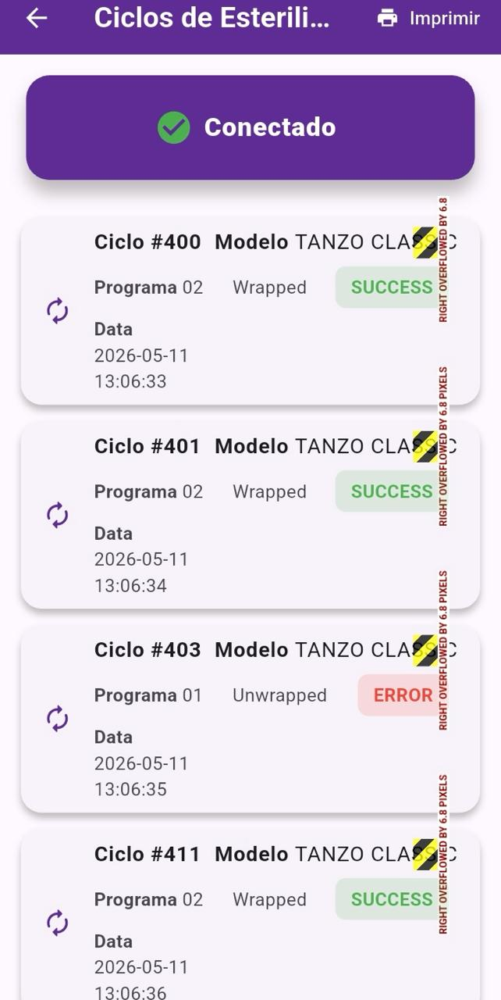

Controle completo da esterilização com rastreabilidade, nuvem e QR Code.
O SteriApp conecta sua autoclave ao mundo digital. Receba ciclos automaticamente via Bluetooth, gere laudos profissionais, imprima etiquetas com dados obrigatórios e mantenha conformidade com a RDC 1002.

Tudo o que sua clínica precisa para gerenciamento da esterilização
Monitoramento Automático
Receba os ciclos da autoclave automaticamente sem utilizar pen drive ou anotações manuais.
Laudos Inteligentes
Gere PDFs profissionais com QR Code, validação online e rastreabilidade completa.
Nuvem Integrada
Seus ciclos protegidos e sincronizados mesmo após reinstalar o aplicativo.
Impressão de Etiquetas
Impressão rápida com dados obrigatórios para identificação dos materiais esterilizados.
Multiusuário
Controle de acesso por usuário e vinculação segura por serial da autoclave.
Auditoria e Segurança
Histórico validado, rastreável e protegido contra duplicações.
Mais organização, segurança e rastreabilidade para clínicas odontológicas.
Desenvolvido para auxiliar clínicas e consultórios na organização digital dos ciclos de esterilização, armazenamento de laudos e rastreabilidade operacional.
Modernize o controle da esterilização da sua clínica com o SteriApp.
Tecnologia inteligente, conectividade BLE, QR Code, nuvem e laudos digitais.
Baixar Aplicativo